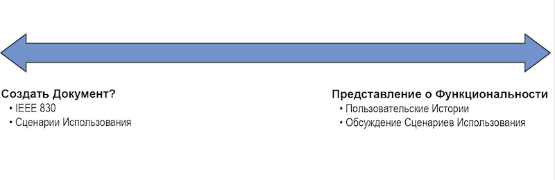

Тактика
7. Управление Бэклогом Продукта
Тест
Прежде чем начать читать эту главу, попробуйте ответить на каждое из следующих утверждений словами «Согласен» или «Не согласен». Ответы будут указаны в конце главы.
Что такое требование?
Согласно Мэриам-Вебстер, требование это:
a: что-то нужное или желаемое: НЕОБХОДИМОСТЬ
б: что-то существенное и необходимое для существования или возникновения чего-то еще: УСЛОВИЕ1
Требование - это не документ. Оно существует вне зависимости от того, было ли оно явно определено или нет. Возможно, оно еще даже не известно. Это усложняет разработку программного продукта. Лучшее, что вы можете сделать, это продолжать инспекцию и адаптацию эмпирическим путем.
Все требования можно отнести к одной из следующих категорий:
- Как/зачем кто-то использует систему - Функциональные
- Как должна вести себя система - Нефункциональные (стабильность, удобство использования, производительность и т.д.)
- Правила, которые окружают существующую область бизнеса (например, формулы, процессы, законы и т. д.)
Необходимый уровень детализации зависит от вашей цели (см. рис. 7-1). Есть ли ценность в самом требовании? Или вы просто заботитесь о том, чтобы ничего не забыть?

Рисунок 7-1 Какова ваша цель документирования требований?
В некоторых ситуациях документ с требованиями может иметь ценность для бизнеса. Если на кону стоит жизнь, возможно, вам потребуется указать более подробную информацию. Если у вас контракт с поставщиками по фиксированной стоимости, может потребоваться дополнительная документация.
Сегодня более ценно представлять потребности заинтересованных сторон, чем фиксировать детали - это касается большинства проектов.
Стремитесь представить или кратко отметить функциональность. Беспокойство о неоднозначности требований и документации может забирать много энергии и быть непродуктивным.
Рассмотрите возможность создания большого списка задач для продукта, цель которого состоит не в том, чтобы фиксировать детали, а в том, чтобы запомнить: какие правильные вопросы нужно задать.
Подумайте сколько пунктов в вашем личном списке дел? Каждый пункт — простое напоминание о необходимости что-то сделать.
Стремитесь лучше понять основные потребности клиентов, такие как критерии приемки, тесты, диаграммы, беседы и т. д. и тогда вы сможете детализировать этот список.
В Scrum «список дел» Владельца Продукта — это Бэклог Продукта.
Бэклог Продукта
Из Руководства по Scrum 2017 года
Бэклог Продукта – это упорядоченный список известных требований к продукту. Это
единственный источник требований и любых необходимых изменений в продукте.
Владелец Продукта является ответственным за Бэклог Продукта, включая его содержимое,
доступность и упорядоченность.
Итак, что именно вы помещаете в Бэклог Продукта?
Рисунок 7-2 Правильные элементы Бэклога Продукта
Как показано на рис. 7-2, Бэклог Продукта может включать в себя любые типы работ:
- Функциональные Требования: Любой запрос от стейкхолдера (например: «Мне нужен доступ администратора», «Я хочу иметь возможность сортировать этот список»).
- Нефункциональные Требования: Качества системы (например, Производительность, Масштабируемость до 2000 одновременно работающих пользователей, Юридические условия договора).
- Эксперименты: Функциональность, выпущенная для тестирования рынка (например, Новый Пользовательский Интерфейс, Опрос Пользователей, Аналитика); кроме того, эксперименты могут «созидающими ограничениями», как описано в Главе 5.
- Пользовательские истории: Помогают обсуждать требования; популярны в agile-сообществе
- Ошибки/Дефекты: Проблемы, которые возникли в предыдущей версии продукта.
- Сценарии Использования: Список действий между пользователем и системой (в наши дни редко используются).
- Возможности: Различные способы или каналы доступа к существующим функциям (например, мобильные устройства, Интернет, облачные сервисы, общедоступный API).
Фреймворк Scrum не предписывает никаких конкретных методов или шаблонов для элементов Бэклога Продукта. Однако подавляющее большинство Scrum-команд заполняют свои Бэклоги Продукта пользовательскими историями.
Пользовательские истории
Сначала сбор требований использовался как канал коммуникации с целью собрать как можно больше информации. Потом появились Пользовательские Истории.
Распространенным подходом к сбору требований были сценарии использования (Use Cases). Сценарии использования были первоначально разработаны и использованы Иваром Якобсоном в 1986 году. Они стали популярными в 1990-х годах среди практиков унифицированного процесса (UP) и унифицированного языка моделирования (UML). Варианты использования позволяют разбивать требования на более управляемые части (сценарии) и описывают конкретное поведение пользователя в работе с системой. Они также дают возможность погружения в большое количество деталей, которые, если вы не будете осторожны, могут создать ненужную документацию и сократить общение. Создание одного сценария использования может занять у команды несколько месяцев, прежде чем он будет передан в разработку.
По общему признанию, варианты использования никогда не предназначались для того, чтобы быть исчерпывающими документами. Они должны были создаваться итеративно по мере разработки. Однако слишком много организаций писали громоздкие варианты использования, которые мало что давали или вообще не приносили никакой пользы. Это приводило к постоянным переделкам.
Чтобы справится с большим количеством деталей в вариантах использования, сообществом Экстремального Программирования в 1990-х годах были введены Пользовательские Истории, с намерением «усилить» краткость и создать неоднозначность толкования. Идея в том, что неоднозначность толкования заставит людей общаться.

Меня часто спрашивают, в чем разница между вариантом использования и пользовательской историей? На мой взгляд, пользовательская история описывает один путь в варианте использования. Вариант использования часто имеет успешный путь, пару альтернативных путей или путей с ошибками и несколько исключительных путей. Часто я вижу ценность в том, чтобы сначала реализовать успешный путь, чтобы проверить лежащее в его основе предположение. Как только мы реализуем первый законченный сценарий и получим обратную связь о том, что мы на правильном пути, мы можем приступить к реализации других путей.
Пользовательские Истории лучше всего объясняются с помощью Трех C :
- Карточка (Card): Легенда гласит, что, когда предприниматели, ищущие инвестора, обращались к Эндрю Карнеги, его стандартным ответом было попросить их написать свои идеи на обратной стороне их визитных карточек. Если идеи нравились, он мог им позвонить. Как вы думаете, на чем фокусировались посетители, имея такую возможность?
Можно представить, что они будут отчаянно пытаться донести ценность и делать такую запись, которая вызовет заинтересует и создаст возможность для последующего разговора.
Это применимо к пользовательским историям, которые обычно записываются фломастером на карточке размером 7,5х12,5 см. Это не требования. Это заметка, в которой записана ценность для бизнеса и обещание будущего разговора, второго "C" (Conversation).
- Обсуждение (Conversation): Команды часто говорят, что область, которая больше всего нуждается в улучшении - это общение. Пользовательские истории, намеренно неоднозначные и интригующие, служат для увеличения общения. Это может экономить вашу энергию при создании Бэклога Продукта и при возникновении новых требований. Вам не нужно сразу беспокоиться о деталях, вместо этого вы быстро записываете что-то для будущего разговора. А детали вы добавите после обсуждения.
- Подтверждение (Confirmation): вместо того, чтобы бесконечно повторять одни и те же разговоры, agile-команды своевременно фиксируют детали пользовательской истории. Обычно они фиксируются как критерии приёмки, до того, как команда возьмется за реализацию пользовательской истории. Критерии приёмки — это необходимые условия, определяемые Владельцем продукта (представляющим заинтересованные стороны), которые должны быть выполнены, чтобы считать историю принятой.
Хорошее правило — запись критериев приёмки на обратной стороной карточки пользовательской истории. Если нужно больше места, историю, возможно, придется разбить на более мелкие истории.
На рис. 7-3 показан популярный и простой шаблон для пользовательских историй. Впервые этот шаблон использовался компанией Connextra и он описан Майком Коном в книге User Stories Applied4.
Рисунок 7-3 Популярный шаблон пользовательской истории
- Как /роль/персона/ (кто?): фокусируйтесь на стейкхолдерах, не только на пользователях. Имейте в виду, что не вся ценность направлена на пользователя системы. Например, юрист компании увидит ценность в пользовательской истории «договор и соглашения», а реального пользователя это может отвлекать. Постарайтесь определить конкретные роли из области бизнеса и избегайте использования общих ролей, таких как «пользователь», или технических ролей, таких как «Владелец продукта», «Скрам-мастер» или «Разработчик».
Однажды на конференции я увидел футболку, на которой было написано что-то вроде этого: «Есть только два вида бизнеса на земле, которые называют своих пользователей «пользователями»: программное обеспечение и нелегальные наркотики».
- Я хочу /поведение/ (что?): это бизнес-ориентированный процесс или действие, описывающее желаемую функциональность. Вам следует избегать технических действий, таких как «Я хочу создать базу данных» или «Я хочу реорганизовать этот фрагмент кода». Эти технические действия ориентированы на решение (а не бизнес-потребность) и должны выполняться как часть отдельной бизнес-ориентированной пользовательской истории.
- Для того, чтобы /ценность/ (зачем?): это важная, но часто забываемая часть пользовательской истории. Чем лучше вы сможете объяснить причину желаемой функциональности, тем более правильные решения и предположения будут приняты всеми участниками. Если создать описание ценности истории сложно, то задумайтесь об обоснованности пользовательской истории.
На рис. 7-4 приведен пример пользовательской истории.
Рисунок 7-4 Пример пользовательской истории
INVEST — полезная аббревиатура для запоминания, созданная Биллом Уэйком в книге «Extreme Programming Explored»5. Используйте слово INVEST для проверки качества вашей пользовательской истории. проверьте ее на соответствие каждому из критериев:
- Независимая (Independent)
С независимыми историями работать проще всего. То есть, желательно, чтобы пользовательские истории не пересекались по концепции, и было возможно планировать и реализовывать их в любом порядке
Вы не всегда можете добиться этого; время от времени мы можем говорить что-то вроде «3 балла за первый отчет, затем по 1 баллу за каждый из остальных».
- Обсуждаемая и ...Обсужденная (Negotiable . . . and Negotiated)
Хорошая история должна быть обсуждена с Заказчиком. Это не детальный контракт на функциональность; скорее, детали будут обсуждаться совместно заказчиком и программистом во время разработки. Хорошая история отражает суть, а не детали. Со временем на карточку истории могут добавляться заметки, идеи тестирования и т. д., но это не является необходимым для приоритезации или планирования историй.
- Ценная (Valuable)
Истории необходима ценность. Мы не заботимся о ценности для кого угодно; история должна быть ценной для клиента. У разработчиков могут быть (законные) возражения, но они должны быть сформулированы таким образом, чтобы клиент воСпринимал их как важные.
- Оцениваемая (Estimable)
Хорошую пользовательскую историю возможно оценить. Нам не нужна точная оценка, однако оценки должно быть достаточно, чтобы заказчик смог приоритезировать и запланировать реализацию истории. Возможность оценить историю зависит от ее обсуждения, поскольку трудно оценить историю, которую мы не понимаем. Возможность оценить историю также зависит от ее размера: большие истории труднее оценить. Наконец, возможность оценить историю также зависит от опыта команды.
- Небольшая (Small)
Хорошие истории, как правило, маленькие. Истории обычно представляют собой максимум несколько человеко-недель работы. (Некоторые команды ограничивают их несколькими человеко-днями работы.) При большем размере сложно понять, что входит в объем истории. Когда мы говорим «у меня это заняло бы больше месяца», мы думаем про себя: «кажется, я не очень то понимаю, сколько времени займет работа». Небольшие истории, как правило, получают более точные оценки.
- Тестируемая (Testable)
Хорошую историю можно проверить. Создание карточки истории несет в себе неявное обещание: «Я достаточно хорошо понимаю чего хочу, чтобы написать для этого тест». Несколько команд отметили, что требование создавать клиентские тесты перед реализацией истории, делает команду более продуктивной. «Тестируемость» всегда была характеристикой хороших требований; написание тестов на раннем этапе помогает нам узнать тестируемы ли наши требования.
Еще одна известная аббревиатура — DEEP (6):
Достаточно Подробный (Detailed Enough) — критерии приёмки определены в начале
Развивающийся(Emergent) — Бэклог Продукта никогда не бывает «завершенным»; он все время уточняется
Относительная Оценка (Estimated Relatively) - оценен размер с точки зрения усилий
Упорядочен по Приоритету (Prioritized Ordered) — по ценности, риску, стоимости, зависимостям и т. д.
Нефункциональные требования
Требования, попадающие в любую из следующих категорий, считаются нефункциональными:
- Удобство использования
- Масштабируемость
- Портативность
- Ремонтопригодность
- Доступность
- Поддерживаемость
- Безопасность
- Производительность
- Затраты
- Соответствие требованиям законодательства
- Культурные
То есть они опираются на существование системы, в отличие от функциональных требований, которые могут существовать независимо от того, есть у вас система или нет. Например, потребность во внесении денег на банковский счет существует в бизнес-сфере клиентского банковского обслуживания независимо от того, существует банкомат или нет. Но наличие банкомата вводит новые нефункциональные требования в отношении безопасности, доступности и удобства использования.
Другими словами, функциональные требования описывают, что система должна делать , тогда как нефункциональные требования описывают, какой система должна быть.
Выделение нефункциональных задач важно, поскольку они определяют многие ключевые архитектурные решения.
Как вы фиксируете нефункциональные требования?
Зафиксируйте свои нефункциональные требования одним из следующих трех способов:
- 1. Как элемент Бэклога Продукта
Поскольку нефункциональные требования имеют непосредственную ценность для бизнеса, вполне допустимо фиксировать их в бэклоге продукта, возможно, даже в виде пользовательских историй, как показано на рис. 7-5.
Рисунок 7-5 Нефункциональное требование как пользовательская история
- Как критерий приемки
Еще один вариант записи нефункциональных требований — как критерии приемки для элемента Бэклога Продукта. Нефункциональное требование становится частью функционального элемента и может повлиять на усилия, необходимые для его выполнения.
Например, функциональный элемент Бэклога Продукта «Вход» может иметь следующие нефункциональные критерии приемки:
- Вход в систему выполняется в течение двух секунд.
- Пароль скрыт.
- Как часть Определения Готовности
Если одни и те же нефункциональные требования применимы к большинству элементов вашего Бэклога Продукта, подумайте о том, чтобы закрепить их в Определении Готовности, поскольку они общие.
Например:
- Все страницы должны загружаться в течение трех секунд.
- Контент должен отображаться на английском и немецком языках.
Мне нравится помещать нефункциональные требования (NFR, Non-functional requirement) в отдельный документ или, что еще лучше, на стену, чтобы они всегда были на виду. Мы помечаем каждое нефункциональное требование буквой алфавита.
Затем, когда мы уточняем и обсуждаем элементы Бэклога Продукта, мы можем обратиться к списку NFR и поставить эти буквы алфавита как краткую запись критериев приемки (см. рис. 7-6). При оценке каждого элемента Бэклога Продукта мы можем учитывать дополнительные усилия по реализации нефункциональных требований в нашей оценке. Если какие-либо требование будет добавлено или удалено, нам, вероятно, потребуется переоценить элемент.
Рисунок 7-6 Пример привязки нефункциональных требований к элементам Бэклога Продукта
Эпики
Истории, которые слишком велики для реализации в одном Спринте, обычно называют эпиками (длинными историями). Наличие эпиков в Бэклоге Продукта — это не обязательно плохо. Эпики часто становятся важным строительным блоком в большом Бэклоге Продукта. Однако, в какой-то момент, вам нужно разделить эпик на несколько более управляемых историй.
Лично мне все равно, назовете ли вы их эпиками или историями. Я просто рассматриваю их как элементы Бэклога Продукта разного размера. Если элемент Бэклога Продукта не может быть переведен в состояние «Сделано» к концу Спринта, он слишком велик. Уточняйте его, пока он не станет нужного размера.
Насколько большая история слишком большая?
Одно довольно распространенное правило в agile-сообществе заключается в том, что если история — элемент Бэклога Продукта — не может быть завершена в течение одного Спринта, то это эпик. Однако иметь только одну большую историю в Спринте проблематично: успех Спринта теперь зависит от завершения этой единственной истории, поэтому вы подвергаетесь гораздо большему риску. Другой неизбежный результат заключается в том, что все тестирование истории (и всего Спринта) будет происходить в конце Спринта. Этот дисбаланс может привести к текучке в Команде Разработки, делая невозможным создание инкремента без дефектов, соответствующего Определению Готовности в рамках Спринта.
Так что ты можешь сделать?
Рисунок 7-7 Эпики разделены на истории по архитектурным слоям
И вы разделяете Эпик еще немного. Хорошо иметь от 6 до 12 элементов Бэклога Продукта в прогнозе для Спринта. Более короткие Спринты будут иметь меньшие элементы Бэклога Продукта. Для двухнедельного Спринта это означает, что каждые пару дней какой-то элемент Бэклога Продукта должен соответствовать Определению Готовности. Это помогает распределить тестирование по всему Спринту.
Команды разработчиков, которые смогут добиться этого, поймут, что они должны фактически выпускать продукт внутри Спринта, а не откладывать ценность до конца.
Как разделить историю?
Это может стать вызовом для многих команд. Помните: элементы Бэклога Продукта должны быть ценны для клиента, а это означает, что каждый фрагмент истории должен демонстрировать некоторую ценность, какой бы маленькой она ни была. По этой причине истории, разбитые по технологическим компонентам (пользовательский интерфейс, база данных и т. д.), считаются некорректными (см. рис. 7-7).
Лучшее место для старта — начать с критериев приемки. Позже вы узнаете больше о том, как писать критерии приемки, а сейчас все, что вам нужно знать, это то, что они являются условиями удовлетворения заинтересованных сторон, а не только пользователя.
Команда разработчиков вместе с владельцем продукта должны спросить: «Что мы собираемся продемонстрировать, чтобы доказать, что эта история завершена?»
В результате получается конкретный список ценных для заинтересованных сторон элементов (см. рис. 7-8). Каждый из этих элементов может быть выделен в отдельную историю.
Рисунок 7-8 Простой пример разделения пользовательских историй по критериям приемки

Я часто получаю отпор от начинающих Scrum-команд. Они настаивают на том, что история слишком сложна, чтобы ее можно было разбить на части. Вместо того, чтобы слишком сильно сопротивляться, я начал спрашивать их о критериях приемки эпической истории. В мгновение ока они выдают дюжину разных вещей, важных для заинтересованных сторон, и, следовательно, предлагают дюжину разных способов разбить эпик.
Когда вы разбиваете эпики?
Помните «Три C» пользовательских историй? Цель карточки – создать диалог. Эпики, которые находятся далеко внизу в Бэклоге Продукта, скорее всего, не слишком много обсуждают. По мере того, как эпики продвигаются вверх в Бэклоге Продукта, о них говорят все больше и фиксируют критерии приемки на обратной стороне карточки. Как только карточка с Историей-Эпиком начинает заполняться критериями приемки — это признак того, что эпик приближается к вершине Бэклога Продукта — вы разбиваете этот эпик на меньшие пользовательские истории. Чаще всего это происходит во время PBR или даже на Планировании Спринта.
Рассмотрим подробнее критерии приемки.
Критерии приемки
Критерии приемки определяют, что клиент увидит, чтобы подтвердить, что работа выполнена. Они могут быть написаны как кейсы для тестирования или что-то менее подробное. Хотя критерии приемки принадлежат Владельцу Продукта, крайне важно привлекать к их написанию всю Scrum-команду (и даже некоторых заинтересованных лиц).
Я не пишу критерии приемки на обратной стороне физической карточки. Это не практично, поскольку необходимо переворачивать карточку снова и снова. Однако последовательность рассуждений сохраняется. Я нашел способ ограничить количество критериев приемки либо по количеству элементов, либо по объему текста. На рис. 7-9 вы можете увидеть пример шаблона, который ограничивает количество критериев приемки (до девяти). Одна из моих больших проблем с ПО для гибкого управления заключается в том, что они не ограничивают количество текста для описаний пользовательских историй и критериев приемки.
Рисунок 7-9 Пример элемента Бэклога Продукта с критериями приемки
Вот три распространенных способа написания критериев приемки:
Проверьте что. . .
Начинайте каждый критерий приемки со слов «Проверьте, что . . ». Это с самого начала настраивает людей на тестирование. Что будет проверено для каждого элемента Бэклога Продукта, чтобы убедиться, что элемент «Сделан»?
Продемонстрируйте что. . .
Начинайте каждый критерий приемки со слов «Продемонстрируйте, что . . ». Это заставляет людей задуматься об обзоре Спринта и о том, что они хотели бы показать заинтересованным сторонам, что демонстрирует ценность. В некотором смысле Скрам-команда пишет сценарий обзора Спринта. Вы можете раздать список критериев приемки на обзоре Спринта и просмотреть их один за другим. Пример этого показан на рис. 7-9, где мы добавили «Продемонстрировать, что . . » в разделе критериев приемки.
Дано, когда, тогда (синтаксис Gherkin)
Синтаксис Gherkin служит двум целям — документированию и автоматизированным тестам. Грамматика понятна любому, но ее также можно разобрать с помощью инструментов автоматизации тестирования, таких как Cucumber (7).
Дано/предварительное условие/
Когда/происходит действие пользователя/
Тогда/ожидаемый результат/
Хорошие критерии приемки должны соответствовать правилам SMART и SAFE (8):
SMART
Specific - быть конкретными, каков результат?
Measurable - быть измеримыми, как можно измерить результат?
Attainable - быть достижимыми, достижимо ли это с текущими настройками (навыками, технологиями и т. д.)?
Relevant - быть релевантными цели, соответствует ли критерий приемки цели?
Time-Bound - быть ограниченными по времени, в какой момент времени можно измерить результат?
SAFE
Success (Успех) — каковы критерии успеха для элемента Бэклога Продукта? Например, пользователь банкомата получает квитанцию об операции.
Advance (Продвижение) — что должно произойти, прежде чем будет достигнут успешный результат? Например, пользователь банкомата принимает условия.
Failure (Неудача)— что может пойти не так и как с этим справиться? Например, у пользователя банкомата недостаточно денег на счету — запросите другую сумму.
Error (Ошибка)— какие ошибочные ситуации находятся вне нашего контроля? Например, в банкомате недостаточно наличных — вывести сообщение «не работает».
SPIKE-истории
Время от времени, обычно в первых Спринтах, Scrum-команда сталкивается с элементом Бэклога Продукта, который они не могут разделить. Обычно это происходит потому, что команда еще недостаточно знает о технологии или предметной области.
Spike-история — это исследовательский элемент Бэклога Продукта, цель которого — узнать больше о том, что необходимо для выполнения запрошенной функциональности.
Такие элементы Бэклога Продукта, как правило, являются очень простым доказательством концепций, которые, скорее всего, не будут использоваться после того, как они выполнили свою задачу. Конечная цель — снизить риск с помощью экспериментов, что позволит нам быстрее принимать более взвешенные решения о продукте.
Осторожно
Опасность спайков заключается в том, что ими, как и любым другим, можно злоупотреблять. Каждый Спринт заканчивается spike-историей, и вскоре команды начинают планировать целые Спринты таких историй. Поскольку spike-истории не приносят непосредственной ценности бизнесу, это скользкий путь. Используйте их, но не злоупотребляйте ими.
Веская причина для spike-истории: загрузите и установите вариант стороннего API, чтобы проверить, соответствует ли он нашим требованиям к производительности. Это позволит Скрам-команде решить, стоит ли пробовать эту функцию или нет.
Плохая причина для spike-истории: исследуйте функцию, чтобы команда разработчиков могла чувствовать себя более уверенно в своих оценках. Вероятно, это больше связано со страхом неудачи, чем с экспериментированием, и не обязательно помогает Скрам-команде принимать решения.
Я видел водопадный подход, скрытый за элементами Бэклога Продукта «анализ», «проектирование», «внедрение» и «тестирование» вместо фактической функциональности, которая соответствует Определению Готовности в конце Спринта.
Предпочтительный подход заключается в том, чтобы исследовать и реализовать элемент Бэклога Продукта в одном и том же Спринте. Если и то, и другое не может быть выполнено в рамках Спринта, то весь элемент Бэклога Продукта возвращается в Бэклог Продукта, и Команда Разработки завершает его в будущем Спринте. Команде не хуже, чем если бы они предварительно разделили историю на разные Спринты.
Стоит повторить, что такая фокусировка внимания на выполнении ценных качественных продуктовых инкрементов в каждом Спринте имеет важное значение для гибкости Scrum-команд и бизнеса в целом. Результатом каждого Спринта является Инкремент, который с точки зрения заинтересованных сторон считается «Сделаным».
Упорядочивание Бэклога Продукта
В Руководстве по Scrum 2011 в части описания Бэклога Продукта слово «приоритезировать» заменено на «упорядочить». Причиной этого было то, что слово «приоритет» слишком часто отождествлялся с ценностью для бизнеса и такими категориями, как «высокий», «средний», «низкий» или MoSCoW (9) («Must», «Should», «Could», «Won’t»):
Must – то, что необходимо сделать в любом случае. Без выполнения этих задач продукт не будет работать в принципе.
Should – не самые важные требования, но они тоже должны быть выполнены. Естественно, после реализации «must».
Could – желательные требования, которые можно сделать, если останется время и будут ресурсы.
Won’t – требования, которые хотелось бы сделать, но их можно проигнорировать или перенести на следующие релизы без вреда для продукта.
В прошлый раз, когда я просматривал Бэклог Продукта компании с приоритетами Высокий-Средний-Низкий, я подсчитывал количество элементов бэклога для каждой категории. 80% из них были высокими, 10% средними, 10% низкими. Вместо того чтобы тратить много усилий приоритезацию длинного списка таким образом, гораздо проще просто признать, что все они важны для бизнеса, и спросить: «Что мы хотим сделать в первую очередь?»
Хотя бизнес-приоритет важен, это не единственная переменная, влияющая на порядок, в котором вы выполняете задачи из Бэклога Продукта.
Чтобы правильно упорядочить Бэклог Продукта, вам необходимо учитывать множество аспектов:
Ценность для бизнеса
Ценность, созданная в результате реализации функции: доход, экономия, удержание клиентов, привлечение потенциальных клиентов и создание будущих возможностей. Функции, которые наиболее соответствуют видению продукта, скорее всего, будут иметь здесь наивысший рейтинг. Пример: функция «Внести платеж», которая приносит прямой доход.
Риск
Важность элемента Бэклога Продукта с точки зрения подверженности опасной ситуации. Сюда входят как коммерческие, так и технические риски. Чем выше риск, тем выше он должен быть в Бэклоге Продукта. Пример бизнес-риска: функция, которая должна быть реализована до нормативного срока. Пример технического риска: внедрение новой технологии, от которой зависит функция, без знания того, будет ли вообще работать технологическое решение.
Стоимость/Размер
Стоимость реализации функции. Это в основном (но не обязательно) связано с усилиями и временем, необходимыми Команде Разработки для его создания.
Зависимость
Независимо от ценности, риска и стоимости/размера, иногда одна функция не может быть реализована раньше другой. Это могут быть как бизнес, так и организационные зависимости. Бизнес-пример: функция аутентификации должна быть завершена прежде чем кто-либо сможет использовать более ценные функции. Организационный пример: функция, которая зависит от другой команды, создающей службу для использования вашей командой.
Как видите, многие параметры влияют на последовательность элементов в бэклоге. Рассмотрим следующую формулу:
(Business Value 1 Risk) / Size 5 Order Rank
Найдя способ оцифровать каждую из этих переменных, вы можете создать систему упорядочивания элементов бэклога, в которой чем выше итоговый рейтинг, тем выше будет элемент в бэклоге продукта (см. рис. 7-10). Затем внесите корректировки на основе выявленных зависимостей.
Рисунок 7-10 Ценность, риск и размер (стоимость) как измерения для упорядочивания Бэклога Продукта
Сосредоточив внимание на небольших ценных функциях, вы рискуете забыть крупные, но ценные элементы. Поскольку это, вероятно, более стратегические инициативы, их идентификация и разбиение на более мелкие (правильного размера) элементы становится важной частью уточнения Бэклога Продукта.
Моя семья хочет отремонтировать нашу кухню. Но из-за того, что это очень сложная задача, мы продолжаем откладывать ее. Это важное и стратегическое дело, но оно просто не выполняется. Решение? Разбейте его на более мелкие задачи. Можем ли мы начать с того, чтобы найти людей, которые сделают предложения по ремонту и смету расходов? Это запустит процесс, и если мы решим, что затраты и риски управляемы, мы возьмемся за ремонт кухни и начнем разбивать его на более мелкие задачи. Прежде чем вы это узнаете, у нас будет новая кухня. Может быть.
Элементы с низкой ценностью, низким риском, и очень низкой стоимостью (левая часть рис. 7-10) не обязательно следует игнорировать. Считайте их «забавными» и работайте над ними, если есть дополнительные возможности или их могут взять на себя новые члены Команды Разработки, которые все еще осваивают работу с продуктом. Некоторые организации даже открывают исходный код этих элементов для других групп внутри организации или даже за пределами организации.
Очевидно, что рискованные элементы бэклога, которые имеют небольшую ценность (правая часть рис. 7-10), следует игнорировать.
Этот шаблонный подход к упорядочиванию бэклога может стать хорошим началом. Только не считайте это волшебной формулой, которая вас ограничивает. Упорядочивание Бэклога Продукта — скорее недетерминированная задача. Вы не должны стремиться к лучшему решению, так как его, скорее всего, не существует. Стремитесь к хорошему решению и доверяйте эмпирическому процессу инспекции и адаптации. Хороший Владелец Продукта с помощью Команды Разработки может использовать интуицию и опыт, чтобы эффективно упорядочивать Бэклог Продукта.
Учитывая это, тратить много времени на упорядочивание нижней половины Бэклога Продукта не стоит. Вместо этого сосредоточьтесь на упорядочивании элементов бэклога для следующих нескольких Спринтов. Поскольку вы уточняете бэклог по ходу работы, остальное решится само собой.
Упорядочивание Бэклога Продукта инициирует множество важных разговоров внутри вашей Scrum-команды (и с заинтересованными сторонами), которые прояснят предположения, неправильные концепции и зависимости и тем самым уменьшат сложность. Этот процесс сам по себе создает большую ценность.
Измерение ценности, риска и размера
В предыдущем разделе была представлена формула, которую следует учитывать при упорядочивании Бэклога Продукта:
(Бизнес-ценность 1 Риск) / Размер 5 Порядок
Эта формула может показаться простой, но откуда взять цифры?
Ценность
Если вы можете определить денежную ценность элемента Бэклога Продукта (например, эта функция будет стоить 300 000 долларов США), то это было бы идеально. Однако так просто бывает очень редко.
В других подходах используются произвольные числа для обозначения ценности, как и при оценке относительных затрат. Диапазон чисел не так важен, как вовлечение заинтересованных сторон и использование мудрости группы. Для этого существует множество техник фасилитации, например:
Игра «Бизнес-ценность» (10)
Используйте покер планирования для оценки ценности, а не размера.
Купи функцию (11)
Инновационная игра, использующая деньги для покупки функций.
Видение 20/20 (12)
Инновационная игра для простого упорядочивания бэклога продукта.
Тридцать пять (13)
Совместная активность для упорядочивания чего-либо.
Использование этих демократичных и вовлекающих процессов с заинтересованными сторонами для оценки бизнес-ценности элементов Бэклога Продукта имеет два основных преимущества для Владельцев Продукта:
1. Они получают лучшее представление о том, что думают их заинтересованные стороны.
2. Заинтересованные стороны чувствуют себя более вовлеченными и услышанными.
Помните, что ценность для бизнеса — не единственный фактор при упорядочивании Бэклога Продукта. Риск, стоимость и технические зависимости также играют свою роль.
Риск
Самый простой способ измерить риск — использовать простое ранжирование «Низкий», «Средний» и «Высокий», выполняемое Scrum-командой. Чтобы использовать эту систему в приведенной выше формуле, присвойте каждому рейтингу риска номер (например, Н51, С55, В510). В конечном счете, шкала, которую вы используете для представления риска, зависит от других факторов: насколько важен риск для вашего продукта? Какую шкалу вы используете для ценности?
Риск может даже не учитываться для определенных продуктов, в то время как другие могут захотеть придать риску больший вес и больший диапазон.
Размер
Наиболее распространенной шкалой, используемой при присвоении относительного размера элементам Бэклога Продукта, является последовательность Фибоначчи (1, 2, 3, 5, 8, 13 и т. д.). В следующей главе, посвященной управлению релизами, будут более подробно рассмотрены причины относительной оценки. В целях упорядочивания Бэклога Продукта просто знайте, что размер элемента является фактором. То, как вы назовете единицу, представляющую ее размер, не так важно (часто ее называют поинтом или стори-поинтом).
Представьте, что у вас есть два элемента Бэклога Продукта, PBI (a) и PBI (b). PBI (a) более ценен для бизнеса, в то время как PBI (b) менее ценен, но снижает больший риск. Что вы должны сделать в первую очередь? Применим формулу:
PBIa → (25 ценность 1 5 риск) / 8 размер 5 3.75 order rank
PBIb →(15 ценность 1 10 риск) / 5 размер 5 5 order rank
В этом случае PBI(b) займет более высокое место в Бэклоге Продукта, поскольку он устраняет большие риски и относительно дешев в реализации.
Это может быть удобной техникой, но, как и во всем, с ней можно зайти слишком далеко. Как владелец продукта, вы теперь испытываете трудности с порядком, полученным из этой формулы? Как и любой инструмент, если он облегчает вашу работу, продолжайте его использовать. Если вы хотите переместить несколько элементов после ранжирования по формуле, делайте это.
Имейте в виду, что эта формула не учитывает зависимости. Хорошая идея, чтобы ваша Скрам-команда прошла через упорядоченный Бэклог Продукта, и изменила порядок на основе технических и бизнес-зависимостей.
Уточнение Бэклога — отличная возможность пересматривать этот порядок в каждом Спринте.
“Сделано”
В этом разделе мы обсудим Определение Готовности, а затем поработаем с примером Определения Готовности.
Определение Готовности
Когда вы ремонтируете ванную комнату, покупаете новую машину или обедаете в хорошем ресторане, у вас есть определенные ожидания относительно конечного продукта. Несмотря на самые лучшие намерения, если ожидания клиентов не совпадают с пониманием этих ожиданий производителем, обычно возникают конфликты и недовольство. Если плитка не ровная, машина грязная или тарелка не подогрета, вы разочарованы.
Четко изложенный и разделяемый набор ожиданий создает прозрачность, необходимую для предотвращения этой проблемы.
Программное обеспечение ничем не отличается. Независимо от того, покупаете ли вы программный пакет, используете продукт как услугу или внедряете внешний API, у вас есть определенные ожидания в отношении качества, производительности и поддержки. Эти ожидания определяют, что значит по-настоящему «Сделано».
Что должно включать в себя Определение Готовности? Ответ зависит от контекста. Хорошие кандидаты:
тщательно протестированный
интегрированный
задокументированный
может быть выпущен
Звучит неплохо? А сколько испытаний? Сколько документации? Есть ли разница, создаете ли вы сайт знакомств или жизненно важный медицинский продукт? Не существует универсального Определения Готовности для всех возможных продуктов. Однако вам необходимо убедиться, что Определение Готовности позволяет непрерывно выпускать релизы не разочаровывая ваших клиентов и заинтересованных лиц, а также четко сформулировано и понимается одинаково всеми вовлеченными людьми.
Из Руководства по Scrum
Определение Готовности — это формальное описание состояния продуктового инкремента, при котором он соответствует требованиям качества, предъявляемым продукту. В момент, когда элемент Бэклога Продукта стал соответствовать Определению Готовности, рождается инкремент. Определение Готовности обеспечивает прозрачность, предоставляя всем единое общее понимание того, какая работа была выполнена в рамках создания инкремента. Если элемент Бэклога Продукта не соответствует Определению Готовности, его нельзя выпускать или даже показывать на Обзоре Спринта. Вместо этого он возвращается в Бэклога Продукта для дальнейшего рассмотрения.
Это общее понимание с целью прозрачности проявляется в Определении Готовности.
Когда вы доберетесь до Готовности? Scrum указывает, что Инкремент должен быть «Сделан» к концу Спринта. Однако ждать до самого конца, чтобы перейти к Готовности, может быть рискованно. Команда Разработки может подстраховать себя, переводя каждый элемент Бэклога Продукта в статус «Сделано» на протяжении всего Спринта. В тот момент, когда элемент Бэклога Продукта соответствует Определению Готовности, он считается частью Инкремента. Чем раньше они смогут достичь этого в течение Спринта, тем лучше (см. рис. 7-11).
 Рисунок 7-11 Непрерывное “Сделано” по сравнению со “Сделано” один раз в конце Спринта
Рисунок 7-11 Непрерывное “Сделано” по сравнению со “Сделано” один раз в конце Спринта
Рассмотрим это Определение Готовности:
Unit-тесты пройдены
Код проверен
Соответствует руководству по стилю кода
Нет известных дефектов
Зарегистрирован в основной ветке разработки
Задокументирован общедоступный API
Приемочные тесты пройдены
Принято владельцем продукта
Регрессионные тесты пройдены
Примечания к релизу обновлены
Тесты производительности пройдены
Руководство пользователя обновлено
Руководство по поддержке обновлено
Тесты безопасности пройдены
Обновлена документация по соответствию требованиям регуляторов
В какой момент ваша Команда Разработки может реально это сделать? Каждый раз, когда они завершают элемент Бэклога Спринта? Элемент Бэклога Продукта? В конце Спринта для общего Инкремента? Или придется ждать до релиза?
Что, если вы поместите их на диаграмму, подобную той, что изображена на рис. 7-12?
 Рисунок 7-12 Более частое состояние «Сделано» снижает риск и способствует непрерывной поставке
Рисунок 7-12 Более частое состояние «Сделано» снижает риск и способствует непрерывной поставке
В идеальном мире все эти элементы должны быть выполнены на уровне элемента Бэклога Спринта. Внедрение таких практик, как автоматизация и устранение бюрократической деятельности, может сделать это реальностью, но, вероятно, дополнительные действия могут снизить вашу рентабельность, по крайней мере, в краткосрочной перспективе.
Чем ниже по линии, показанной на рис. 7.12, вы опускаетесь, тем больше риска. Все, что находится на уровне «Релиз», представляет собой огромный риск, поскольку вы указываете, что эти элементы не могут быть выполнены в рамках Спринта, и их придется отложить до момента непосредственно перед основным выпуском. Итак, как далеко вы можете продвинуть эти действия? Что вы можете сделать, чтобы поднять их на уровень выше? Если на регрессионное тестирование уходит две недели, то, скорее всего, вы не сможете выполнить его за Спринт. Однако откладывать регрессионное тестирование до самого конца рискованно. Ваша Скрам-команда должна сосредоточиться на всех элементах уровня «Релиз» и задаться вопросом, какие практики они могут внедрить, чтобы продвинуть их вверх. В случае регрессионного тестирования автоматизация может иметь большое значение. Но не соглашайтесь на регрессионное тестирование только один раз в Спринте для Инкремента. Что нужно для того, чтобы все регрессионные тесты запускались каждый раз, когда Команда Разработки завершает элемент Бэклога Продукта? Или что делать каждый раз, когда программист проверяет код? Именно так Скрам-команда становится ближе к непрерывной доставке.
Так в чем же разница между критериями приемки и Определением Готовности? Определение Готовности относится ко всему Инкременту. Критерии приемки относятся к одному элементу бэклога продукта. Чтобы осознать ценность элемента Бэклога Продукта, вы должны выполнить все его критерии приемки, а также то, что содержится в Определении Готовности. Если вы отказываетесь от элемента Бэклога Продукта, вы также отказываетесь от его критериев приемки. Определение Готовности остается. Другими словами, Определение Готовности является глобальным критерием приемки.
Определение Готовности касается двух аспектов. Один из них — это то, что требуется с хорошей инженерной точки зрения, технические аспекты Команды Разработки. Другие, хотя и меньшие, аспекты — требования предметной области (домена), такие как правила, законы и т. д. О последних необходимо сообщить Группе Разработки, чтобы они могли найти способ корректно их реализовать с их точки зрения (см. рис. 7-13).
 Рисунок 7-13 Разделение между техническими и предметными аспектами в Определении Готовности
Рисунок 7-13 Разделение между техническими и предметными аспектами в Определении Готовности
Как часто меняется Определение Готовности? Опять же, это зависит от разных факторов. Всякий раз, когда появляются новые идеи о продукте и его качестве, пора менять Определение Готовности. Обычно в начале происходит больше изменений, так как в первые Спринты происходит много обучения, особенно в технической части. Определение Готовности в части предметной области меняется всякий раз, когда вводятся рыночные или внутренние/внешние нормативные требования. Нефункциональные требования (производительность, удобство использования, юридические и т. д.) часто попадают в Определение Готовности. Определение Готовности со временем растет (см. рис. 7-14).
Рисунок 7-14 Определение Готовности растет с течением времени
Думайте об Определении Готовности как о правилах качества, которых придерживаются все. В отличие от таких профессий, как врачи, сантехники и бухгалтеры, в индустрии разработки программного обеспечения нет общепризнанного документа, который бы защищал ее, когда от нее требуется больше и быстрее. По крайней мере, когда Скрам-команда (и организация разработчиков) внутри компании устанавливает свои собственные стандарты качества, им есть на что указать, когда их просят сделать что-то, что может поставить под угрозу качество продукта. В рамках постоянного совершенствования ретроспектива Спринта является хорошим местом для внесения правок в Определение Готовности.
Пример Определения Готовности
Определение Готовности может сильно различаться от команды к команде. Ниже приведены примеры определений Готовности от уважаемых коллег-тренеров:
Барри Оверим:
Создан дизайн
Обновлена документация
Протестировано
Утверждено владельцем продукта
Понятно «как провести демонстрацию» на обзоре Спринта
Франсуа Дерозье:
Проверка кода завершена
Модульные тесты выполнены
Тесты BDD выполнены на основе критериев приемки
Готова документация (на основе документации, которую клиент определил как важную и ценную)
Функции протестированы/одобрены Владельцем продукта или бизнес-аналитиком
Функции, развернуты в промежуточной среде
Исходный код функций находится в соответствующей ветке
Джеронимо Паласиос:
Продукт работает
Соответствует критериям приемки
Продукт в производственной среде
Проверен экспертами
Покрыт тестами
Все тесты пройдены
Внесен в мастер-ветку
Нет явных ошибок
Принято владельцем продукта
API задокументировано
Все, что не тривиально - прокомментировано
Аргумент для двоичных файлов задокументирован
Фредрик Вендт:
Все контролируется версиями
Код проверен
Автоматические тесты настроены
С решением ознакомлена вся команда
Продукт в производственной среде
Винсент Тенс:
Все автоматические тесты пройдены
Приложение поддерживает ожидаемую нагрузку
Время отклика находится в допустимых пределах
Ручные тесты являются окончательными/Manual tests are conclusive
Исследовательские тесты являются окончательными/Exploratory tests are conclusive
Команда разработчиков довольна тестовым покрытием
Приложение было переведено на французский и английский языки
Приложение доступно на всех поддерживаемых устройствах
Примечания к релизу обновлены и готовы к публикации
Онлайн-справка обновлена в части последних реализованных функций
Диагностика операций может быть выполнена эффективно и своевременно
Команда операционной поддержки уверена, что сможет работать с приложением и поддерживать его
История изменений может быть использована
Команда разработчиков может автоматически настроить новую среду разработки
Новые ключевые знания и выводы и проектные решения документируются
Команда разработчиков довольна новым пользовательским интерфейсом
Кодовая база находится в лучшем состоянии, чем раньше
Команда разработчиков довольна новым качеством кода
Команда операционной поддержки может вернуться к предыдущей версии с сохранением всех данных
Приложение доступно в пред-продуктивной среде
Никаких новых уязвимостей безопасности не было выявлено
Команда разработчиков может воспроизвести идентичное развертывание
Ральф Джохам:
Соответствует стандартам разработки
Проходит анализ кода
Задокументировано (сценарий, SAD, тестовый случай, интерфейсы)
Проверено или запрограммировано в паре
Автоматические модульные тесты (для не UI, т. е. уровень, содержащий бизнес-логику, имеет тестовое покрытие 95% или выше)
Автоматические Selenium тесты; каждый сценарий использования имеет как минимум один Selenium тест
Автоматические Appium тесты на целевом устройстве
Весь текст локализован
Нет известных ошибок
На рис. 7-15 показан полезный шаблон для Определения Готовности для нескольких команд, работающих над одним продуктом. Он определяет общие элементы для команд, но также оставляет свободу в том, как работают внутри каждой команды разработчиков.
Рисунок 7-15 Шаблон Определения Готовности
Почему это важно для владельца продукта?
Для владельца продукта некоторые из этих элементов Определения Готовности очевидны. У вас должен быть интегрированный продукт, у вас должен быть необходимый уровень документации и соответствия регуляторным требованиям, и вам нужна определенная степень тестирования. Но почему вы должны беспокоиться о таких элементах программирования, как соблюдение стандарта кодирования? Почему для вас важно, чтобы длина метода не превышала 12 строк, а длина строк не превышала 80 символов? Почему вы, как владелец продукта, должны знать об этих моментах или даже применять их?
Посмотрите на это так: почему вы регулярно меняете масло в своей машине? Почему вы регулярно проверяете давление в шинах или отвозите машину в сервис? Как водитель, вы хотите добраться только из пункта А в пункт Б; вот где ценность для вас. Однако, если вы не уделяете внимания обслуживанию, в конечном итоге небрежность приведет к поломке на обочине дороги, с большими затратами на ремонт. То же самое и с программным обеспечением. Если вы не будете поддерживать его, вы накопите много технического долга, что замедлит разработку, сократит количество инноваций и в долгосрочной перспективе приведет к гораздо большим затратам.
По этой причине Владельцу Продукта важно понимать технические концепции Определения Готовности и осознавать, что в долгосрочной перспективе они могут иметь ужасные последствия. Вот почему вы хотите знать о них и отслеживать их. Если этого еще не произошло, попросите вашу команду разработчиков начать их измерение и, возможно, добавить измерения в автоматизированную среду непрерывной интеграции, которая будет сообщать всем о нарушении Определения Готовности в тот момент, когда команда разработчиков внесет любой новый код, нарушающий это определение.
Это похоже на уведомление с приборной панели автомобиля в тот момент, когда что-то идет не так. В конечном счете, правильное Определение Готовности создает прозрачность для владельца продукта, команды разработчиков и заинтересованных сторон.
«Подготовлено» — образ мышления
Работа с самоорганизующейся Командой Разработки очень эффективна, и вы будете поражены тем, чего они могут добиться. Однако самоорганизация имеет свои пределы.
Мусор на входе → мусор на выходе
Если вы загружаете мусор в Спринт, вы, скорее всего, получите мусор на выходе.
Другими словами, если вы не «Подготовлены» в начале Спринта, вы не получите «Сделано» в конце Спринта.
Mise en place — это французская кулинарная фраза, которая примерно переводится как «поставить на место» или «все на своих местах», что относится к организации вашей кухни до того, как вы начнете готовить. По сути, вы должны убедиться, что у вас есть все необходимые ингредиенты в достаточном количестве, нужное оборудование готово к работе, предварительно разогрета духовка и так далее. Представьте, что на полпути к приготовлению знаменитого яблочного пирога вашей бабушки вы обнаруживаете, что у вас не хватает яблок. Вам придется бежать и покупать еще, но как только вы вернетесь, уже нарезанные яблоки могут стать коричневыми. Если вы хотите получить восторженные отзывы, это, безусловно, не позволит вам их получить. Как только вы расставите все по своим местам и убедитесь, что у вас есть инструменты и инфраструктура, вы готовы к работе.
Что похожего в разработке программного продукта? Ну, это не так просто, как выложить все перед собой. Разработка программного продукта сложна, абстрактна и менее осязаема. Это означает, что «Подготовлено» также менее осязаемо. Даже если элементы Бэклога Продукта были разбиты, оценены и заданы четкие критерии приемки, вы все равно можете не знать, как реализовать элемент Бэклога Продукта.
Джефф Паттон включил полезную метафору в свою книгу о карте пользовательских историй (15), которая подчеркивает важность «разговора» в «трех С» (карточка, разговор, подтверждение). Он рассказывает историю о том, как показал другу картинку из отпуска, картинку, подобную той, что на рис. 7.16, на которой изображен Ральф и несколько друзей в отпуске.
Вы видите фотографию Ральфа, удивленного группой разноцветных птиц. Для Ральфа это нечто большее. Это воспоминание, которое он может пережить, глядя на него. Он был там, чтобы пережить момент, место, рассказ о том, как его нашли птицы, пение птиц, шум, который они издавали (они были оглушительными), их запах (они были резкими) и их довольно острые когти, которые оставили царапины на его коже, которые оставались видимыми несколько дней спустя.
 Рисунок 7-16 Ральф в отпуске с птицами
Рисунок 7-16 Ральф в отпуске с птицами
Для остальных из нас это просто фотография; для Ральфа это яркое воспоминание. Вот что такое элементы Бэклога Продукта. Думайте о них как о воспоминаниях, которые вы создаете для каждого члена Команды Разработки. Помимо размера, оценки и критериев приемки, не так уж важно, что написано на карточке. Важно то, что стоит за картой. Напишите достаточно на карточке элемента Бэклога Продукта, чтобы запомнить, но убедитесь, что повествование остается таким, чтобы его можно было вспомнить, если оно станет частью Цели Спринта.
Другими словами, получение “подготовленного” элемента Бэклога Продукта — это передача истории, стоящей за картинкой, таким образом, чтобы Команда Разработки могла на нее воздействовать.
Как получить “Подготовленный” элемент Бэклога
Что именно означает «Подготовлено»? Есть три минимальных требования, которым должен соответствовать каждый элемент Бэклога Продукта, прежде чем он будет реализован в Спринте:
1. Достаточно маленький, чтобы его можно было выполнить за один Спринт
2. Размер таков, что вы можете получить представление об общих усилиях для всего Бэклога Продукта
3. Достаточно деталей (критериев приемки), чтобы они могли служить подтверждением того, что элемент Бэклога Продукта работает, как задумано.
Кроме того, вы можете даже ссылаться на архитектурные ограничения, бизнес-правила, дизайн UX, зависимости и многое другое в зависимости от потребностей продукта и Scrum-команды.
Ничто из этого не должно быть идеальным. Команда Разработки должна знать достаточно, чтобы сделать прогноз в Планировании Спринта. Это может варьироваться от команды к команде.
Скрам не дает Определение понятию «Подготовлено». Руководство по Scrum считает элементы Бэклога Продукта «подготовленными», если они могут перейти в состояние «Сделано» в течение одного Спринта. Почему? Состояние «Сделано» описывается в Определении Готовности. Это контрольный список, в котором вы можете отметить каждый пункт значением “да” или “нет”. Один или несколько ответов «нет» означают, что элемент не соответствуете Определению Готовности и не может быть выпущен. С другой стороны, определение состояния «Подготовлено» - это не контрольный список, а полезное руководство для использования во время уточнения бэклога, которое не всегда достижимо. Определение состояния «Подготовлено» не запрещает Команде Разработки создавать элемент Бэклога Продукта, который не на 100% «Подготовлен».
Предупреждение: я работал с Командами Разработки, которые отказывались принимать элемент Бэклога Продукта в Спринт, если он не соответствовал их Определению «Подготовлено». Хотя на первый взгляд это кажется разумным, я заметил, что этот документ стал воротами или даже контрактом, который изменил мышление Команды Разработки — мышление, которое было менее гибким. Помните третью ценность Agile-манифеста: «Сотрудничество с клиентами важнее переговоров по контракту»? Определение состояния «Подготовлено» не может использоваться в качестве контракта. Если Владелец Продукта просыпается посреди ночи перед сессией Планирования Спринта с величайшей идеей, разве он не может передать ее своей Команде Разработки на следующий день, чтобы она рассмотрела ее для предстоящего Спринта? Даже если она не полностью соответствовала Определению «Подготовлено»? Предупреждение здесь состоит в том, чтобы рассматривать определение состояния «Подготовлено» как руководство, а не конкретный контракт, который может уменьшить истинное сотрудничество.
Важно то, что состояние «Подготовлено» — это образ мышления, общее понимание, которое должно быть достигнуто внутри Scrum-команды. Неважно, представлен ли контент в виде пользовательской истории, предложения или грубого наброска. Важно то, что каждый член Команды Разработки понимает цель элемента Бэклога Продукта и чувствует себя комфортно, начиная его реализацию. Таким образом, в дополнение к трем пунктам, показанным ранее: достаточно маленький для одного Спринта, размер и достаточное количество деталей, рассмотрим четвертый пункт:
4. Понят командой разработчиков
Как только это состояние будет достигнуто, смело делайте элемент Бэклога Продукта частью вашей Цели Спринта.
Рисунок 7-17 Использование строки «Подготовлено» для элементов Бэклога Продукта
Однажды я работал со Scrum-командой, у которой была отличная идея. Они добавили строку «Подготовлено» на стену Бэклога Продукта, которая была устроена аналогично карте пользовательских историй. После каждого события по уточнению бэклога, элементы Бэклога Продукта продвигались дальше по стене по мере их оценки, разбивались на дополнительные карточки и добавлялись критерии приемки. В какой-то момент карточка была близка, но все еще находилась под черной линией «Подготовлено». Только после того, как Команда Разработки и Владелец Продукта сочли ее «Подготовленой», карточка перемещалась над черной линией для переноса в один из предстоящих Спринтов. На рис. 7-17 показан пример этого.
Бережливое управление требованиями
Нет ничего хуже, чем выбрасывать красивый кусок тяжелой работы.
Однажды у меня был отменен проект после того как я и моя команда работали сверхурочно в течение трех месяцев. Мы жили в офисе, за исключением того, что ходили домой за свежей одеждой и поцеловать семью дважды в неделю. После «успешного» бета-запуска проект был закрыт уже на следующий день из-за опасений возможного судебного разбирательства по поводу нарушения патентных прав. Какие напрасные траты!
Вместо того, чтобы руководствоваться такими действиями, как планирование, анализ, проектирование, внедрение и тестирование, где размер вашего выпуска — это весь продукт, хорошо иметь Бэклог Продукта, который позволяет вам мыслить ценностью. Это одна из причин, по которой Владельцу Продукта важно всегда держать Бэклог Продукта готовым и упорядоченным. Бэклог Продукта постоянно изменяется, детали попадают в центр внимания по мере того, как Scrum-команда работает над ним. Чем дольше они могут откладывать принятие решения, тем лучше решения они примут.
По сути, это означает, что первый хороший момент для принятия решения является последним ответственным моментом.
Последний ответственный момент (Last Responsible Moment, LRM)
Стратегия не принимать преждевременных решений, а вместо этого откладывать выполнение обязательств и держать открытыми важные и необратимые решения до тех пор, пока цена непринятия решения не станет больше, чем цена принятия решения (16).
Это позволяет вам сохранять неизвестное неизвестным, сложность неопределенной настолько долго, насколько это разумно. Но как только придет время, вы пойдете глубже. Вы переходите от «ширины в милю и глубины в дюйм» к «ширине в дюйм и глубине в милю». Вы делаете это как раз вовремя, а затем создаете еще один Инкремент именно с тем, что вы указали чуть ранее. Таким образом, вы откладываете принятие решения, чтобы избежать создания потерь.
Другими словами, подготовьте достаточное количество элементов Бэклога Продукта для следующих нескольких Спринтов. Все остальное считается потерями.
Бережливое производство впервые разработанное Toyota, представляет собой систематический метод, сводящий к минимуму потери без ущерба для производительности.
Бережливое производство определяет семь областей потерь. Самый простой способ запомнить их — подумать о расточительном ТИМЕ ВУДЕ (TIM WOOD), как показано в Таблице 7-1.
Таблица 7-1 Мнемотехника TIM WOOD
Все, что не добавляет ценности, считается потерями. По-японски это называется muda. Бережливый подход различает два вида muda:
Muda типа I — деятельность, не добавляющая ценности, необходимая для продукта или клиента. Например, документация соответствия регуляторным требованиям.
Muda типа II — деятельность, не добавляющая ценности, не нужная для продукта или покупателя. Цель состоит в том, чтобы устранить этот тип потерь.
Карта пользовательских историй
Обычно Бэклоги Продукта представляются в виде одномерных приоритезированных очередей. Принудительный порядок полезен, так как требует от вас, Владельца Продукта, принятия трудных решений, потому что ни один элемент Бэклога Продукта не может быть столь же важным, как другой. Это дает ценную информацию о том, как действовать дальше. Однако иногда бывает полезно добавить в Бэклог Продукта другие измерения для тем, клиентских сегментов, релизов и т. д.
Создание карты пользовательских историй, первоначально разработанное Джеффом Паттоном (17), является мощным инструментом для поиска правильного решения для ваших пользователей и развивается по мере того, как вы получаете информацию. Это процесс визуализации вашего продукта от первоначального видения до ключевых действий пользователя и жизнеспособных релизов (см. рис. 7-26). Карта историй становится многомерной картой, которая рассказывает историю всего продукта в целом и предоставляет стратегию развития для быстрого обучения.
 Рисунок 7-18 Структура карты пользовательских историй
Рисунок 7-18 Структура карты пользовательских историй
Шаги по созданию карты историй
В этом разделе описаны этапы создания карты историй.
1. Основа - ключевые действия клиента
Попробуйте увидеть всю картину с высоты птичьего полета, костяк (см. рис. 7-26). Определите своих пользователей и их высокоуровневые ключевые действия. Обратитесь к своей бизнес-модели как к источнику этой информации. Сегменты клиентов могут идентифицировать пользователей, а ценностные предложения могут быть действиями-кандидатами. См. раздел бизнес-моделирования в Главе 2.
2. Эпики — ходячий скелет
Разбейте высокоуровневые действия на эпики, чтобы сформировать ходячий скелет вашей карты историй (см. рис. 7-26).
3. Пользовательские истории — карта вашего самого важного пользователя
Когда у вас есть ходячий скелет, возьмите идеального пользователя, о котором вы только можете подумать, и наметьте пользовательские истории с вашим продуктом для этого пользователя на обычный день. Поток пользовательских историй идет слева направо. Определить вашего идеального пользователя должно быть просто, если вы уже разработали видение продукта. См. раздел «Видение продукта» в главе 2.
4. Откройте для себя дополнительные ключевые действия клиента
Часто многие пользовательские истории связаны друг с другом и могут быть сгруппированы как деятельность, которая превращается в основные действия клиента. Это повторяющийся процесс, поскольку со временем появляется все больше и больше историй и действий (см. рис. 7-18). Действия могут быть первыми или могут быть идентифицированы задним числом путем группировки существующих пользовательских историй.
5. Дополните карту дополнительными пользователями
После того, как вы разработали карту историй для своего идеального и критического пользователя, сделайте то же самое для других пользователей в зависимости от их важности. Нет смысла вдаваться в подробности для пользователей, потребности которых вы еще не готовы решать. Опять же, используйте поток слева направо и добавьте свои действия и задачи. Убедитесь, что каждый «пользователь» задачи может быть четко идентифицируем.
Изучение карты историй
Далее вы исследуете карту историй.
1. Заполните и уточните карту историй
Разбивайте большие пользовательские истории на более мелкие и добавляйте больше деталей. Это разделение пользовательских историй может быть для разных пользователей, разных вариантов потока и многого другого. Другие карточки переписываются по мере роста понимания. Все эти изменения означают, что карта историй меняется снова и снова.
2. Думайте нестандартно
Попытайтесь придумать все замечательные возможности, которые вы только можете придумать, и опробуйте их на своей карте историй. Не ограничивайтесь, пока вы делаете это. Позже будет время для сортировки карты историй. Также не забывайте думать обо всех вещах, которые могут пойти не так.
Мыслите нестандартно, чтобы придумывать интересные идеи для продуктов. Каких варианты пользователи ожидают от продукта?
Каковы исключительные пути для всех вещей, которые могут пойти не так, и как пользователь может восстановиться?
Есть ли другие пользователи и как бы они хотели использовать продукт?
3. Соберите отзывы
Расскажите эту карту историй тем, у кого есть опыт работы в этой области и кто понимает потребности пользователей. Используйте их вклад, чтобы уточнить карту историй. Кроме того, ваша команда разработчиков поможет узнать о рисках, зависимостях и доступных технологиях. Опять же, этот процесс является итеративным.
4. Сгруппируйте по релизам
Вся карта историй, вероятно, слишком велика для одного релиза. Переместите более важные пользовательские истории выше и переместите менее важные истории ниже, чтобы сформировать группы по выпускам. Думайте о получившейся карте историй как о дорожной карте другого рода, где первый релиз — это ваш минимально жизнеспособный продукт (MVP).
Карты историй и Бэклоги Продукта
Как связаны карты историй и Бэклогом Продукта?
Короткий ответ - отлично. Как описано в разделе «Бэклог Продукта», Бэклог Продукта отражает всю работу, которую необходимо выполнить Команде Разработки. Бэклог Продукта — это одномерная приоритезированная очередь. Карта историй отражает огромный объем работы из Бэклога Продукта более чем в одном измерении. Scrum-команде необходимо спроецировать карту историй в ваш Бэклог Продукта (см. рис. 7-19). Результирующий порядок должен отражать то, что лучше всего максимизирует создание ценности, снижение рисков и технические зависимости для быстрого обучения.
Вы также можете обнаружить ограничения, то есть работу, которая замедляет или останавливает выполнение других элементов Бэклога Продукта (или пользовательских историй). Ограничения могут быть техническими или какими-либо еще.
Рисунок 7-19 Карта историй, спроецированная в Бэклог Продукта
Прошлое и будущее
В определенных ситуациях, например, при замене существующего продукта, полезно сначала составить карту историй текущей реальности, а затем карту историй будущего. Противопоставление обеих точек зрения помогает понять и сформулировать дельту и необходимую работу для достижения желаемого результата.
Карта влияния (Impact mapping)
Требования могут превратиться в чрезмерно усердный список покупок. Если вы чувствуете, что у вас есть только один шанс озвучить свои потребности, вы можете попытаться подготовиться ко всем возможным непредвиденным обстоятельствам. Этот подход в сочетании с определенным процессом, в котором весь продукт доставляется одной большой партией, создает две большие проблемы:
1. Нет общей картины (видения)
2. Нет обучения (проверки)
Как помогает карта влияния в этих вопросах? Карта влияния — это метод стратегического планирования, который помогает компаниям сфокусироваться на цели при создании продукта. Каждое предположение четко изложено. Каждое из действий команды сфокусировано и направлено на достижение одной из этих бизнес-целей. Поскольку каждое действие четко направлено на достижение цели, его можно измерить и проверить во время работы над ним. Это позволяет более эффективно составлять дорожные карты.
Кроме того, работа в Спринтах с инкрементами в состоянии «Сделано» в конце каждого Спринта способствует постоянному изучению того, что создает Скрам-команда и как они работают вместе. Это включает в себя отзывы клиентов, объем, тесты, интеграцию и многие другие элементы. Эта обратная связь позволяет подтвердить успешность обучения. Эти знания, в свою очередь, определяют масштаб и дорожную карту.
Этот подход с четким видением и ценностным мышлением с измеримыми бизнес-целями, основанными на непрерывной проверке, позволяет вам поставлять даже крупные взаимозависимые продукты в среде постоянных изменений.
Кроме того, поскольку все решения валидируются, этот процесс приводит к лучшему выбору в части дорожной карты и объема, что, в свою очередь, приводит к меньшему расползанию объема и меньшим потерям на этом пути.
В своей популярной книге «Начните с того, зачем» (18) Саймон Синек приводит сильный аргумент в пользу того, что вы всегда должны начинать с «Зачем?», как описано в его «Золотом круге» (см. рис. 7-20).
Рисунок 7-20 Золотой круг
Карта влияния выстраивает и расширяет мышление, используя «Зачем?» для определения правильного масштаба и того, как его проверить. Это достигается добавлением вопроса «Кто получит выгоду?» (см. рис. 7-21).
 Рисунок 7-21 Карта влияния, учитывающая человека, на которого воздействуют
Рисунок 7-21 Карта влияния, учитывающая человека, на которого воздействуют
Мне нравится думать об этом следующим образом: благодаря тому, что мы делаем, мы улучшаем чью-то жизнь. Это может быть не так уж и много — скажем, нужно нажимать одну кнопку вместо двух, — но это все же улучшение. Попробуйте подумать о том, «Кто» этот человек и «как» вы улучшите его жизнь.
Если «Зачем?» — это цель, которую вы хотите достичь, вместе с метрикой ценности для проверки ее выполнения, а «Кто?» — это вовлеченное в использование продукта лицо, на которого оказывается воздействие, вы можете определить «Как?» изменится его жизнь с появлением вашего продукта, чтобы ваша цель была выполнена. Как только влияние определено, вы можете придумать «Что?» необходимо сделать. Это ваш результат. Полученная карта влияния позволяет сравнить различные варианты и измерить результат (см. рис. 7-22).
Рисунок 7-22 Пример карты влияния
Каждый результат, в свою очередь, может быть разбит на элементы Бэклога Продукта, например, в формате пользовательских историй (см. рис. 7-23). Учитывая, что цель, действующее лицо и результат определены, определение элементов Бэклога Продукта становится более простым.
Рисунок 7-23 Элемент Бэклога Продукта как пользовательская история из карты влияния
Критерий успеха
Карта влияния — это мощный способ определить что необходимо делать для достижения конкретной цели. Тем не менее, было бы здорово заранее определить, как можно измерить успех (см. рис. 7-24)?
 Рисунок 7-24 Критерии успеха как измерение влияния
Рисунок 7-24 Критерии успеха как измерение влияния
Подумайте об измерении и о том, как оно подтвердит ваше целевое воздействие. Эта практика полезна, поскольку она требует заранее определить способы проверки ценности и результирующие метрики. Это хороший механизм, чтобы связать ваши показатели с показателями EBMgt: в данном случае с удовлетворенностью клиентов.
На рис. 7-25 показан способ сделать это прозрачным, создав другое представление Бэклога Продукта.
Рисунок 7-25 Назначение элементов Бэклога Продукта воздействиям
Каждый элемент Бэклога Продукта связан с воздействием, и каждое воздействие имеет четкий способ измерения и проверки. Наличие размера элемента Бэклога Продукта помогает определить ожидаемые общие усилия и конечные затраты.
Цель состоит в том, чтобы каждый элемент Бэклога Продукта был связан с воздействием. Может быть какая-то работа, которую нельзя связать. Это приемлемо до тех пор, пока вы все еще можете оправдать его существование, что может привести к вновь обнаруженным воздействиям.
Спецификация через примеры
По мере роста формальности тесты и требования становятся неразличимыми. В пределе тесты и требования эквивалентны (19).
— Роберт Мартин и Григорий Мельник
Давайте разберем эту цитату. Формальность не означает, что вы должны приложить большие предварительные усилия по проектированию, чтобы указать все в Бэклоге Продукта. Это означает, что вы убираете достаточно двусмысленности из элемента Бэклога Продукта как раз вовремя, чтобы он был «Подготовлен» для его разработки с минимальными потерями.
Требования имеют тенденцию быть абстрактными. Поначалу это хорошо, так как вы оставляете возможности для различных вариантов, пока вы определяете область действия, исходя из довольно широких целей или видения продукта.
Однако чем дальше элемент Бэклога Продукта продвигается вверх по Бэклогу Продукта, тем больше он должен быть «Подготовлен», чтобы быть использованным в Спринте. К тому времени, когда для требования написаны тесты, оно становится намного более точным (см. рис. 7-26). Здесь тесты и требования становятся неразличимыми. Если есть что-то столь же точное, как тест, зачем еще нужны требования? Тест — это требование, а требование — это тест. Устранение необходимости в отдельных требованиях снижает количество потерь. Поскольку тесты выполняются постоянно, вероятность их обновления гораздо выше, чем документа с требованиями.
 Рисунок 7-26 Различные уровни и степень детализации элементов Бэклога Продукта
Рисунок 7-26 Различные уровни и степень детализации элементов Бэклога Продукта
В то же время человеческий мозг не так уж хорош в обработке большого количества информации одновременно. Это означает, что получать большую точность следует непосредственно перед началом разработки.
Когда-то я был разработчиком/архитектором крупного продукта. У нас было около пяти месяцев (пять Спринтов), когда я обнаружил, что работаю над этой функцией. Я думал, что понял ее достаточно хорошо, и сделаю ее за пару дней. Я отправил ее нашему специалисту по контролю качества через наш инструмент отслеживания. Не прошло и 10 минут, как мне сообщили, что моя фича не прошла тесты. Озадаченный, я связался с QA-специалистом, который появился за моим столом с трехстраничным тест-кейсом в руках. Она указала на то, где я ошибся. Мой ответ был обычным для таких программистов, как я: «Что? Я не знал, что это должно было быть сделано. Откуда это взялось?" Она объяснила мне, что за несколько недель до этого встречалась с владельцем продукта, который помог ей написать тестовый пример. Я почувствовал себя обиженным, так как я начал эту функцию только за несколько дней до этого, и спросил: «Могу ли я в следующий раз получить это до начала? Или ты можешь просто пригласить меня на встречу?» В тот момент я понял, что с моей точки зрения я смотрю не на тестовый пример, а на требования. Это были ответы на тест, которые обеспечили бы мне его успешное прохождение и сэкономили бы всем массу времени.
Вы достигаете такого уровня точности, разбивая требование на все возможные сценарии и иллюстрируя их. Каждый сценарий будет проиллюстрирован как минимум одним конкретным примером, а при необходимости и другими. Этот процесс - командная работа, поэтому учитываются все точки зрения. Полученные примеры помогают команде разработчиков реализовать требование, а также эти примеры помогают в тестировании. И разработка, и тестирование получают информацию из одного и того же источника. Вам удастся устранить всю двусмысленность, используя тесты как требования и требования как тесты. Другими словами, исполняемые требования.
Как только вы достигнете такого уровня точности, их довольно легко автоматизировать. Спецификация через примеры использует это и формулирует требования путем написания автоматических тестов. Затем эти автоматические тесты могут функционировать как исполняемая документация (см. рис. 7-27).
 Рисунок 7-27 Примеры влияют на требования и тесты (20)
Рисунок 7-27 Примеры влияют на требования и тесты (20)
Примеры - звучит красиво, но как вы их определите? Ознакомьтесь с концепцией Триады (21). Триада состоит из представителей каждой из следующих областей:
Бизнес
Разработка
Тестирование
В Scrum эти роли будут выполняться владельцем продукта и/или экспертом в предметной области для бизнес-области, а также программистом и тестировщиком из команды разработчиков. Как видите, эти три области могут быть легко охвачены кросс-функциональной Scrum-командой. Вместе они уточнят и проиллюстрируют требования и все критерии приемки на конкретных примерах.
Рассматривайте триаду как смесь вопросов «почему?» и «что?» с точки зрения бизнеса и «как» с точки зрения разработки. Таким образом, в квадрантах гибкого тестирования, впервые описанных Брайаном Мариком (22) в 2003 г., они находятся в квадранте 2 (см. рис. 7-28). С развитием agile Квадрант 2 стал наиболее важной областью для тестирования.
Рисунок 7-28 Квадранты Agile-тестирования и 3C или триада
Преимущества использования Спецификации через примеры и иллюстрации требований примерами многочисленны.
Это тесное сотрудничество между тремя доменами является отличным противоядием от недопонимания. Это предотвращает ошибки и последующее исправление ошибок. Это приводит к меньшему количеству переделок, более высокому качеству продукта и сокращению сроков выполнения работ.
Кроме того, часто не так очевидно, это позволяет одновременно работать над элементами Бэклога Продукта в рамках Спринта из-за лучшего согласования действий различных ролей, таких как программисты, тестировщики и бизнес-аналитики в кросс-функциональной Команде Разработки.
В конечном счете, Спецификация через примеры синхронизирует понимание бизнеса, разработки и тестирования. Каждый думает, что знает, что подразумевается под таким критерием приемки, как:
«Когда пользователи входят в систему с недействительными учетными данными, они должны получить предупреждающее сообщение».
На самом деле это утверждение может означать совершенно разные вещи для разных людей. Неверный пароль? Неверный адрес электронной почты? Неправильная роль? Нет пароля? Слишком много попыток? Какое сообщение? Каждый раз одно и то же сообщение?
Простой вопрос: «Не могли бы вы привести несколько реальных примеров, на которых вы попытались бы показать, как это работает?» может устранить большую двусмысленность. В Таблице 7-2 представлены такие примеры.
Таблица 7-2 Пример Спецификации через примеры
Эти примеры представляют собой данные, которые вам в любом случае потребуется собрать на каком-то этапе разработки этой конкретной функции (при написании модульных тестов, добавлении тестовых данных, исследовательском тестировании и т. д.). Собрать воедино по крайней мере некоторые из этих данных на ранних этапах цикла разработки — суть Спецификации через примеры. Это уже не тесты, это исполняемые требования.
В Scrum есть много возможностей для создания и расширения этих примеров. Уточнение Бэклога Продукта, Планирование Спринта или даже во время Спринта, когда Команда Разработки начинает работу над новым элементом Бэклога Продукта.
Некоторое время назад я был в команде, которая разрабатывала судебно-медицинское программное обеспечение, помогающее проверять лаборатории, чтобы они могли представлять результаты в суд. Как лаборатория, вы должны доказать, что вы будете получать правильный результат снова и снова. Это также означало, что продукт, который мы разрабатывали, должен был соответствовать требованиям FDA. Необходимо было рассмотреть все применимые законы и правила и предоставить рекомендации для таких лабораторий, чтобы они могли пройти проверку.
Хотя это был захватывающий продукт, частью которого я мог бы стать, он был намного выше моей зарплаты. Моя неуверенность в программировании определенных функций заставляла меня снова и снова ходить к нашему бизнес-аналитику. «Глория, не могли бы вы еще раз быстро объяснить, как это работает?» был мой обычный вопрос. В какой-то момент Глория, я думаю, ей это надоело, протянула мне электронную таблицу, содержащую всю важную информацию об определенных вычислениях (см. рис. 7-29). Вместо одной абстрактной теории у меня были конкретные примеры для всех возможных случаев. Эти примеры помогли мне, как программисту, правильно реализовать функционал с первого раза. Когда я закончил, наши тестировщики использовали ту же таблицу для тестирования продукта.
В этом проекте мы на собственном горьком опыте открыли для себя спецификацию через примеры. Как только мы придумали этот подход — проиллюстрировать наши требования большим количеством примеров в электронных таблицах — наша производительность и качество продукции значительно выросли.
Эти электронные таблицы на самом деле были нашей документацией и помещены в нашу систему контроля версий, в которой небольшая программа собственной разработки считывала входные значения, выполняла функции и сравнивала результаты с электронной таблицей. Всякий раз, когда части электронной таблицы приводили к неожиданному поведению некоторых испытаний, мы получали обновленную электронную таблицу. Затем эта таблица заменила существующую, и мы просто перезапустили все тесты. Если что-то не получалось, мы сразу это видели и могли начать разговор с нужными людьми.
Рисунок 7-29 Пример из жизни “Спецификации через примеры”
Подумайте о процессе разработки спецификации через примеры следующим образом: сначала вы создаете высокоуровневый элемент Бэклога Продукта, например, пользовательскую историю. Затем эта пользовательская история уточняется и иллюстрируется примерами, пока она не будет признана «Подготовленной» и не станет частью прогноза Спринта. Затем каждый пример превращается в автоматизированный функциональный тест (23), и для каждого из тестов функциональность разрабатывается с помощью модульных тестов (они же TDD — разработка через тестирование), как показано на рис. 7-30.
Рисунок 7-30 Объединение Спецификации через примеры и разработки через тестирование
Проверка теста
Сравните свои ответы из начала главы с приведенными ниже. Теперь, когда вы прочитали главу, могли бы вы изменить какой-либо из своих ответов? Согласны ли вы с ответами ниже?
Бэклог Продукта заменяет необходимость любых других документов с требованиями. (Нет)
Agile требования должны состоять максимум из нескольких предложений. (Нет)
Пользовательская История является синонимом элемента Бэклога Продукта. (Нет)
Дефекты не должны быть в Бэклоге Продукта, потому что они рассматриваются Командой Разработки. (Нет)
Команда Разработки не должна допускать Элементы Бэклога Продукта в Спринт, если они не соотвествуют Определению Подготовленности (Definition of Ready). (Нет)
Бэклог Продукта может состоять из тестов. (Да)